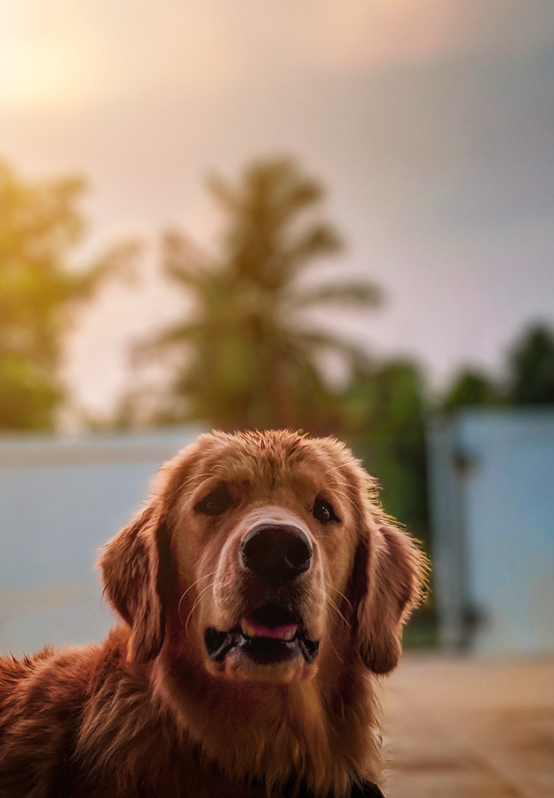

Meet our Pets!
Meet Mittens
This is Mittens! She was found on alone looking for food. We took her in, cleaned her up and now she's waiting for you to take her home.

Meet Mollie
Mollie is a senior kitty who's perfect for a childless home or elderly parent. Come and see how sweet she is! She'd love to lay in your lap for hours!

Meet Buddy
Buddy is a sweet guy who loves to play outside. He'd be great in a home with a kitty door so that he can come and go as he pleases.

Meet Rosco
Rosco loves to play in the yard and chase his ball! Rosco doesn't like going on walks too much, so he's pretty much a homebody.

Meet Rusty
Rusty likes playing with kids so he's the purfect family dog. He'll cuddle on the couch with you on cold winter nights and likes to hog the blankets.
Meet Furball
Furball is...special. Here he's seen dressed up for Christmas WAY too close to Halloween. Unlike Punkin' below, Furball has a proper sense of time.
Meet Punkin'
Punkin' is seen here picking out the purfect pumpkin for Halloween.
Meet our Pets!
| This is Mittens! - She was found on alone looking for food. We took her in, cleaned her up and now she's waiting for you to take her home. |
This is Mollie! - Mollie is a senior kitty who's perfect for a childless home or elderly parent. Come and see how sweet she is! She'd love to lay in your lap for hours! |
This is Buddy! - Buddy is a sweet guy who loves to play outside. He'd be great in a home with a kitty door so that he can come and go as he pleases. |
| This is Rosco! - Rosco loves to play in the yard and chase his ball! Rosco doesn't like going on walks too much, so he's pretty much a homebody. |
This is Rusty! - Rusty likes playing with kids so he's the purfect family dog. He'll cuddle on the couch with you on cold winter nights and likes to hog the blankets. | This is Furball! - Furball is...special. Here he's seen dressed up for Christmas WAY too close to Halloween. Unlike Punkin' below, Furball has a proper sense of time. | Punkin' is seen here picking out the purfect pumpkin for Halloween. |